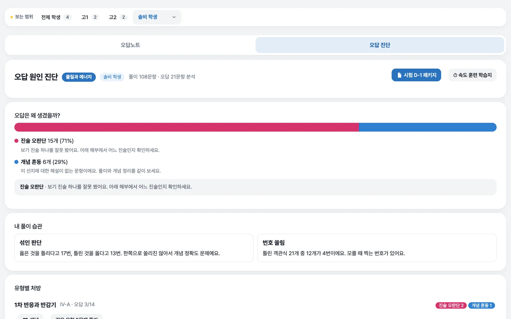
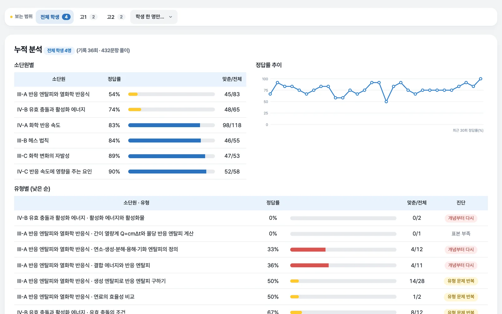
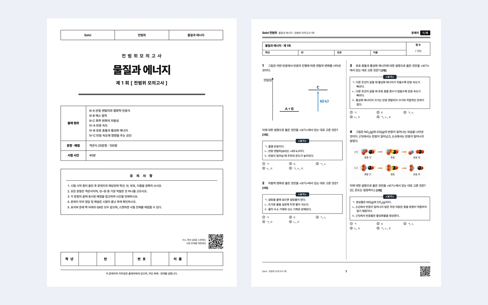
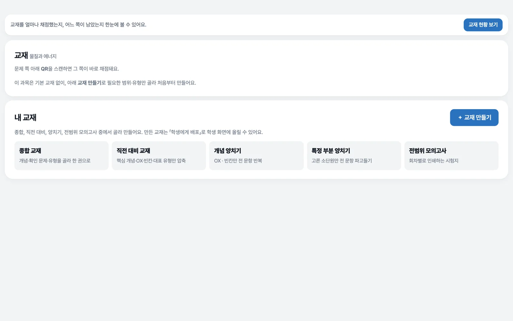

물질과 에너지
- 문항
- 17,522
- 유형
- 56
- 소단원
- 6
- Ⅲ-A 반응 엔탈피와 열화학 반응식
- Ⅲ-B 헤스 법칙
- Ⅲ-C 화학 변화의 자발성
- Ⅳ-A 화학 반응 속도
- Ⅳ-B 유효 충돌과 활성화 에너지
- Ⅳ-C 반응 속도에 영향을 주는 요인
Solvi는 고등 과학 · 국어 문제 은행으로 학습지와 교재를 만들어 인쇄하고, 쪽마다 찍힌 QR로 그 자리에서 채점해요. 틀린 문항은 유형별로 쌓여 다음 학습지가 돼요.
학습지 번호만 있으면 로그인하지 않아도 채점돼요. 번호로 채점하기

만들기부터 다시 만들기까지 다섯 단계가 한 앱 안에서 이어져요. 단계를 누르면 그 단계의 실제 화면이 나와요.
범위 · 유형 · 난이도 · 문항 수를 고르면 몇 초 만에 학습지가 나와요. 학습지마다 8자리 번호가 붙고, 교재는 문제 쪽마다 그 쪽만의 QR이 찍혀요. 학생마다 약한 유형으로 여러 장을 한 번에 만들 수도 있어요.
A4 · 2단으로 인쇄해 평소처럼 연필로 풀어요. 문항마다 배점이 붙고, 「양면 인쇄」를 켜면 빈 쪽을 알아서 채워 답안이 뒷면에서 시작하지 않아요.
쪽 아래 QR을 휴대폰 카메라로 찍으면 앱을 따로 열지 않아도 그 쪽 문항이 채점 화면에 올라와요. 답을 누르고 제출하면 점수와 함께 틀린 문항의 원인(진술 오판단 · 개념 혼동 등)이 나와요.
틀린 문항은 262개 유형 중 하나로 쌓여요. 유형마다 누적 정답률과 최근 6회를 합쳐 해골 · 위험 · 보통 · 양호 · 완전 정복 다섯 단계로 판정해서, 무엇을 다시 풀지 바로 보여요.
「취약 유형 자동 선택」을 누르면 정답률이 낮은 유형이 골라지고, 같은 유형의 새 문항으로 다음 학습지가 만들어져요. 학생 홈에는 지금 보강하면 좋은 유형과 오늘 할 일이 나와요.


학습지 번호로 채점할 때처럼 틀린 문항만 누르면 끝이에요. 점수, 유형별 정답률, 다음 학습지 구성이 누를 때마다 바뀌어요.
문항 번호와 유형 이름은 물질과 에너지 문제 은행의 실제 유형이에요. 실제 학습지는 학생의 채점 기록 전체로 구성해요.
같은 채점 기록을 세 사람이 각자 필요한 화면으로 봐요. 선생님은 만들고 배포하고, 학생은 풀고 채점하고, 학부모는 지켜봐요.


무엇을 만들든 같은 문제 은행에서 새 문항을 뽑고, 쪽마다 QR이 들어가요. 종류를 누르면 실제로 인쇄되는 쪽이 나와요.
유형과 난이도, 문항 수를 골라 몇 초 만에 한 장을 만들어요. 학습지마다 8자리 번호가 붙어 번호만으로 채점돼요.
39,277문항이 모두 같은 형식이라 채점 결과가 유형 · 난이도 · 틀린 이유로 바로 나뉘어요. 오른쪽 문항을 직접 풀어 보세요.
Ⅲ-A · 결합 에너지와 반응 엔탈피
결합 에너지에 대한 설명으로 옳은 것은?
과목마다 소단원과 유형이 정리돼 있어요. 앱 왼쪽 위에서 과목을 바꿔요.
문항 수 · 유형 수 · 난이도 비율은 지금 문제 은행 기준이에요. 문항은 계속 늘어요.
만들고, 채점하고, 고치고, 관리하는 화면이 모두 한 앱에 있어요. 옆으로 넘기거나 화살표를 눌러 보세요.






문제를 만들던 앱에서 원생 · 반 · 출결 · 수납까지 처리해요. 다른 선생님 계정과 함께 쓰고, 학부모 앱에는 필요한 것만 보여요.
전화번호가 010-12345678 이면 12345를 누르세요.
출결 번호
체험판이에요. 아무 번호나 다섯 자리를 눌러 보세요. 같은 번호를 한 번 더 누르면 하원, 00000은 없는 번호일 때 모습이에요.
학원 입구 태블릿에 출결 번호를 누르면 등원, 같은 날 한 번 더 누르면 하원이 기록돼요. 월간 달력으로 한 달을 보고, 학부모 앱에서도 바로 확인해요.
반마다 요일 · 시간 · 강의실을 정하면 학생과 학부모 시간표에 바로 나와요.
반 수강료로 한 달 청구를 한 번에 만들고, 납부를 기록하고, 영수증을 내요.
상담 내용과 보강 일정을 학생마다 남겨요.
학생에게, 학부모에게, 또는 둘 다에게 공지를 보내요.
앱 왼쪽 위와 학습지 머리글에 학원 이름이나 로고가 들어가요.
학원이 하는 일만큼 고르세요. 아래에서 필요한 기능을 누르면 그 기능이 모두 들어 있는 요금제가 표시돼요.
고른 기능이 없어요. 위에서 필요한 기능을 눌러 보세요.
50,000원/ 월
학생 추가 없이 학습지를 만들어 출력하고, 배부할 수 있어요.
학생 최대 30명
150,000원/ 월
반을 만들고, 학생들을 실시간으로 관리해요.
학생 최대 50명 · 이후 1명당 추가 요금
300,000원/ 월
학원의 행정업무까지 한 곳에서 관리해요.
학생 수 제한 없음
| 기능 | 라이트 | 플러스 | 플래티넘 |
|---|---|---|---|
| 만들기 | |||
| 학습지 만들기 · 인쇄 | 포함 | 포함 | 포함 |
| 교재 만들기 · 인쇄 | 포함 | 포함 | 포함 |
| 채점 · 분석 | |||
| 학습지 · 교재 OMR 채점 | 없음 | 포함 | 포함 |
| 학생별 유형 관리 | 없음 | 포함 | 포함 |
| 문항 검색 · 빠른 해설 | 없음 | 포함 | 포함 |
| 취약 유형 지도 · 관리 | 없음 | 포함 | 포함 |
| 학습 현황 실시간 보기 | 없음 | 포함 | 포함 |
| 학원 운영 | |||
| 학생 출결 시스템 | 없음 | 없음 | 포함 |
| 학부모 계정 · 학원비 수납 | 없음 | 없음 | 포함 |
| 알림장 | 없음 | 없음 | 포함 |
| 강사 수업 · 보강 시간표 자동 생성 | 없음 | 없음 | 포함 |
| 학생 수 | |||
| 등록할 수 있는 학생 | 30명 | 50명이후 1명당 추가 | 제한 없음 |
부가세 별도 첫달 포함
여기에 없는 내용은 앱에 로그인한 뒤 오른쪽 아래 「도움말」이나 학원 설정의 「신고」로 물어봐 주세요.
물질과 에너지, 세포와 물질대사, 역학과 에너지, 화법과 언어 네 과목이에요. 앱 왼쪽 위에서 과목을 바꿔요.
학생은 로그인 없이 학습지 번호나 QR로 채점할 수 있어요. 학생 등록, 취약 유형 분석, 학습지 관리는 선생님이 로그인해서 써요. 학생 · 학부모 아이디는 선생님이 학생 목록에서 만들어 줘요.
교재와 학습지의 문제 쪽 아래에 그 쪽만의 QR이 있어요. 휴대폰 카메라로 찍으면 그 쪽 문항이 채점 화면에 올라오고, 답을 고르면 바로 채점돼요.
솔비 플러스는 학생 50명까지이고, 그 뒤로는 1명당 추가 요금이 붙어요. 솔비 플래티넘은 학생 수 제한이 없어요.
네. 학습지를 화면에서 풀거나, 교재를 eBook으로 열어 펜으로 필기하며 풀 수 있어요.
웹에서 바로 써요. 휴대폰 홈 화면에 추가하면 앱처럼 열리고, 과목별로 오프라인 준비를 해 두면 인터넷이 끊겨도 풀 수 있어요.
네. 학부모 계정으로 자녀 현황, 출결 · 납부, 시간표, 과제, 유형 분석을 보고 선생님 공지를 알림으로 받아요. 학부모 계정은 선생님이 학생 목록에서 만들어 줘요.
로그인하면 온라인에 저장돼서 다른 기기에서도 이어서 봐요. 로그인하지 않으면 이 기기에만 저장되니, 백업 파일로 한 번 받아 두면 안전해요.
A4 · 배율 100% · 여백 없음으로 인쇄해요. 「양면 인쇄」를 켜면 답안이 뒷면에서 시작하지 않게 빈 쪽을 알아서 채워요.
학원 설정에서 이름이나 로고(라이트 · 다크 모드 따로)를 올리면 앱 왼쪽 위와 학습지 머리글에 들어가요.
문항마다 하 · 중 · 상 · 최 난이도가 붙어 있고, 다섯 번 넘게 풀린 문항은 실제 정답률로 난이도를 다시 맞춰요(학원 설정에서 끌 수 있어요).